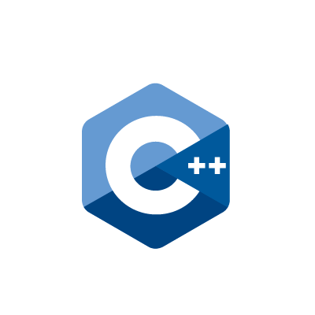
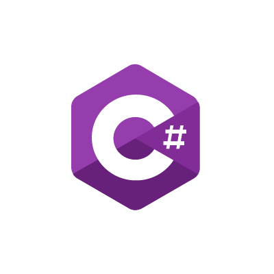
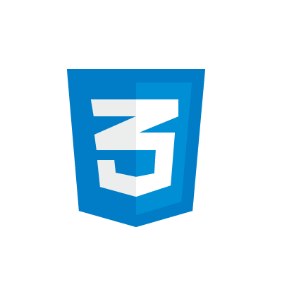
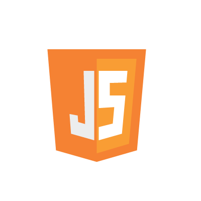

Proyectos
Mi recorrido comienza en C y C++ en UTN FRGP hace algunos años. En mi GitHub tengo subidos dos trabajos prácticos realizando ABML. El primero es un gestionador de gastos e ingresos. El segundo es un cotizador de compra-venta.

Estudié bases de datos relacionales con SQL Server, WinForms con C#, asp.net y web con HTML5, CSS3 y JavaScript. En GitHub se encuentra mi último TP realizado en winforms y con conexión a base de datos.


En mi GitHub tengo subida una pagina de ejemplo para una prueba técnica, uno de mis primeros acercamientos a HTML y CSS con límite de tiempo.


Desde que empecé con mi carrera como programador, realicé de forma grupal e individual la creación de páginas web usando WordPress para una consultora, una banda de musica infantil, una administración de consorcios, y una pagina de venta de cursos.